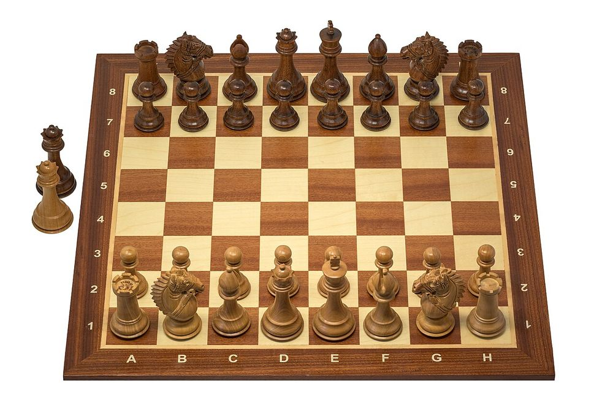

La stratégie, au sens large : réfléchir pour atteindre un but, en déjouant un adversaire, une idée ou une barrière. J'adore ce concept, et je le retrouve partout.
01Penser pour accomplir
Pour moi, la stratégie, c'est l'art de réfléchir pour arriver à ses fins : anticiper, choisir, s'adapter. Ce qui me plaît, c'est cette réflexion, et la satisfaction d'accomplir quelque chose en prenant le dessus sur un adversaire, mais aussi sur une idée ou sur une barrière : trouver le chemin que personne n'avait vu.

Pièces d'échecs sur un échiquier02Les échecs, une passion
Je joue aux échecs, et je les aime profondément. Ce que j'y trouve, c'est un duel de réflexion pur : chaque décision compte, il faut anticiper, et rien ne se joue au hasard. C'est la stratégie à l'état brut, et c'est pour ça que j'y reviens.
03Jeux de société et jeux vidéo
J'ai beaucoup joué aux jeux de société, surtout à ceux à grande échelle. Côté jeux vidéo, la stratégie est partout dans ce que je joue : Counter-Strike, Squad, Age of Empires, Civilization… Des univers très différents, mais toujours la même question : comment prendre l'avantage ?
04La stratégie et l'informatique
C'est aussi ce qui me plaît dans l'informatique : une infrastructure se pense comme une partie. Il faut anticiper les pannes, protéger ses points faibles, prévoir un plan B (sauvegardes, plan de reprise d'activité) et, en cybersécurité, comprendre l'adversaire pour garder un coup d'avance. Une infrastructure bien pensée, c'est une stratégie qui fonctionne.